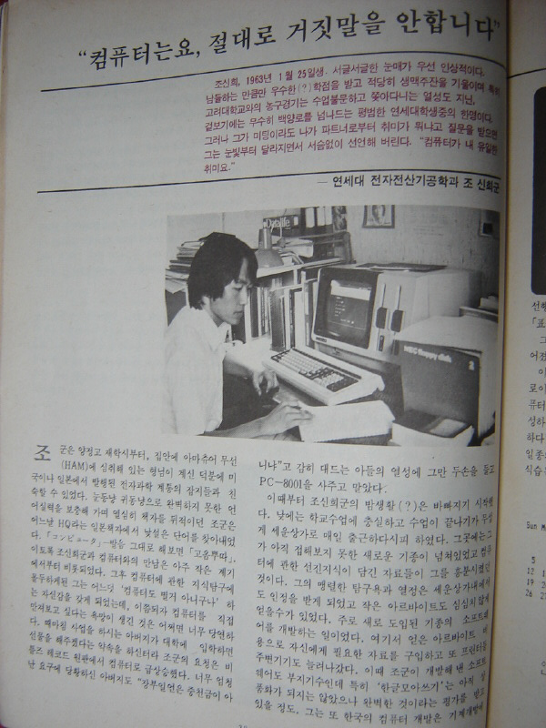

POSTS 컴퓨터는요, 절대로 거짓말을 안합니다. February 12, 2007  한국 최초의 컴퓨터 종합지인 월간컴퓨터학습 창간호 (1983년 11월) 에 실린 기사. 나중에 잡지 이름을 마이컴(MyCom)이라는 이름으로 개명하게 됩니다. http://agorabbs3.media.daum.net/griffin/do/kin/read?bbsId=K153&articleId=13551&pageIndex=1&searchKey=&searchValue= 에서 퍼옴